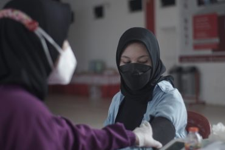
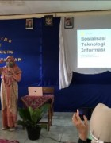

Top 10 Universities with
Real Impact (WURI)
Ranking 2021

Prestasi ITTP |
Lebih Dekat Purwokerto |
Fasilitas dan Kegiatan Kampus |
Virtual Tour Campus |
ITTP mendapatkan Prestasi dalam berbagai bidang, baik dalam skala Nasional maupun Internasional. |
Temukan suasana hidup dan belajar di Purwokerto bersama dengan keindahan dan kesejukan kotanya |
Informasi tentang ragam kegiatan mahasiswa dan berbagai fasilitas di Kampus ITTP. |
Kenali lingkungan kampus dengan lebih dekat. |
| Lihat Prestasi | Lihat Kehidupan Kampus | Lihat Fasilitas dan Kegiatan | Lihat Virtual Campus |
Kampus Cepat KerjaTerbukti rata-rata 83% lulusan bekerja sebelum wisuda |
Terakreditasi BAN PTTerbukti rata-rata 83% lulusan bekerja sebelum wisuda |
Go InternasionalMemiliki 25 kerja sama internasional |
Kampus NasionalMahasiswa berasal dari 31 provinsi di Indonesia |
TESTIMONI & OPINI
|
Arif Budi Prasojo
Bekerja di Indosat Ooredoo |
Arif Budi Prasojo
Bekerja di Indosat Ooredoo |
Arif Budi Prasojo
Bekerja di Indosat Ooredoo |
Saya sangat bangga menjadi alumni Institut Teknologi Telom Purwokerto. Pengetahuan dan pengalaman saya peroleh selama kuliah, telah mengantarkan saya menuju karier sebagai Service Manager di Indoesat Ooredoo |
Saya sangat bangga menjadi alumni Institut Teknologi Telom Purwokerto. Pengetahuan dan pengalaman saya peroleh selama kuliah, telah mengantarkan saya menuju karier sebagai Service Manager di Indoesat Ooredoo |
Saya sangat bangga menjadi alumni Institut Teknologi Telom Purwokerto. Pengetahuan dan pengalaman saya peroleh selama kuliah, telah mengantarkan saya menuju karier sebagai Service Manager di Indoesat Ooredoo |
Kampus Bangkitkan Desa Wisata |
||
| Tidak terasa sudah dua tahun berlalu negara kita menghadapi pandemi virus covid-19. Korban jiwa dan kerugian materil di semua sektor pemerintahan hampir semuanya terdampak pandemi covid-19. Rasa kebingungan dan was-was akan | terjadinya gelombang kedua nampak terlihat di wajah para pemimpin kita, tak terkecuali Bapak Presiden Jokowi Dodo dan Menteri Pariwisata Ekonomi Kreatif Sandiaga Uno. Ya, | |
| Lihat Selengkapnya | ||
BERITA & ACARA
Pendidikan Telkom Gelar Vaksinasi Massal untuk Civitas Kawasan Pendidikan Telkom dan Warga PurwokertoBERITA LAINNYA |

|
Sosialisasi dan Workshop Aplikasi Inovasi Desa Melung |
| Pengmas dalam rangka Sosialisasi dan Workshop Aplikasi Inovasi Desa Melung telah dilaksanakan oleh empat... | ||
|  | Dosen ITTP Selenggarakan Pengmas untuk Guru SD | |
| Telah terlaksana kegiatan pengabdian masyarakat oleh dua dosen ITTP, Gita Fadila Fitriana, S.Kom., M.Kom... |

|

|
|
|
|
INGIN LEBIH DEKAT DENGAN ITTP?Yuk chat aja dan ikuti akun social media ITTP |
 |